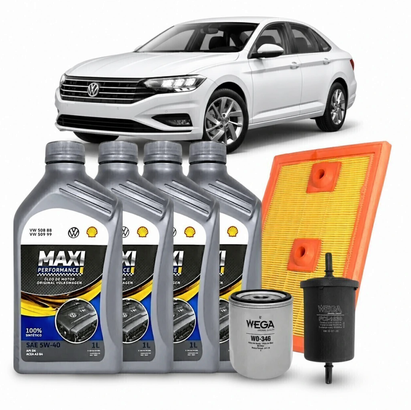

Kit de troca oléo e filtro

Óleo sintético de alta performance acompanhado do filtro original para proteção e durabilidade do motor (R$ 180,00).
Bem-vindo ao nosso catálogo de auto-peças! Aqui você encontrará uma ampla seleção de peças de alta qualidade para o seu veículo.

Óleo sintético de alta performance acompanhado do filtro original para proteção e durabilidade do motor (R$ 180,00). Pastilhas de freio de alta qualidade para garantir a segurança do seu veículo (R$ 145,00).
Pastilhas de freio de alta qualidade para garantir a segurança do seu veículo (R$ 145,00).
 Bateria de alta capacidade para garantir o funcionamento ideal do seu veículo (R$ 650,00).
Bateria de alta capacidade para garantir o funcionamento ideal do seu veículo (R$ 650,00).
 Serviço completo de alinhamento 3D e balanceamento para garantir o desempenho ideal do seu veículo (R$ 300,00).
Serviço completo de alinhamento 3D e balanceamento para garantir o desempenho ideal do seu veículo (R$ 300,00).
 Serviço completo de limpeza de bicos e injeção eletrônica para garantir o desempenho ideal do seu veículo (R$ 250,00).
Serviço completo de limpeza de bicos e injeção eletrônica para garantir o desempenho ideal do seu veículo (R$ 250,00).
 Serviço completo de revisão de suspensão para garantir o desempenho ideal do seu veículo (R$ 350,00).
Serviço completo de revisão de suspensão para garantir o desempenho ideal do seu veículo (R$ 350,00).